Конструктор курсов в LMS
Конструктор курсов — внутренний сервис, в котором методисты собирают образовательные курсы из готовых материалов: банков вопросов, тестов и других учебных элементов.
Когда я подключилась к проекту, единого инструмента для сборки курсов не было. Одни методисты работали в Moodle, другие вели структуру в Excel, а материалы хранили на Google Дисках и Яндекс Дисках. У каждой школы был свой процесс, поэтому организация обучения зависела от подразделения и используемых инструментов.
Бизнес поставил задачу создать собственный корпоративный конструктор. В нём методисты должны были собирать курсы из готового контента, настраивать структуру и готовить её к публикации.
Провела три встречи с методистами на разных этапах развития продукта. Первая помогла разобраться в предметной области и спроектировать основу конструктора. На следующих я изучала работу с уже реализованным сервисом, проверяла решения и собирала обратную связь для новых итераций.
Созвон 1. Разбор предметной области
Участники: старший методист бизнес-школы и методист доп образования.
Чтобы понять процесс сборки курса, подготовила вопросы:
Что такое готовый курс и из чего он состоит?
Как вы собираете новый курс с нуля? Какие шаги проходите?
Откуда берёте учебные материалы и кто их предоставляет?
Как формируете структуру курса и выбираете названия её уровней?
Что занимает больше всего времени при сборке?
Вспомните последний курс: что пошло не так и что пришлось переделывать?
Что бы вы в первую очередь изменили в текущем процессе?
Главный инсайт: подразделения использовали разные инструменты и терминологию, но принцип сборки курса был общим: сначала задаются параметры курса, затем формируется его структура и наполняется учебным контентом. Это стало основой модели конструктора.
Дополнительно провела конкурентный анализ: Stepik, Moodle и другие российские и зарубежные LMS. Смотрела, как в существующих решениях устроены создание курсов и организация контента.
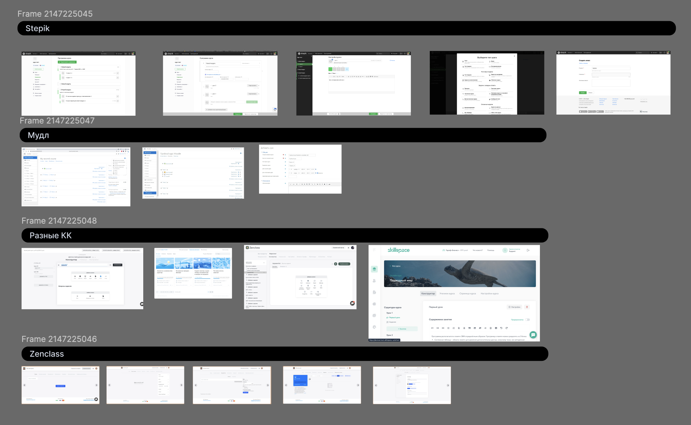
По итогам исследования выделила две основные части будущего сервиса: настройка параметров курса и создание его структуры с наполнением.
Собрала обратную связь от методистов и проверила, как работает новый процесс.
методисты перешли на сборку курсов в конструкторе и больше не возвращались к прежнему процессу.
разделение на параметры и структуру помогло организовать работу, путаницы между этапами не возникало.
Спроектировала два ключевых сценария: управление списком курсов и создание нового курса. Реализовала основные этапы работы:
просмотр списка курсов и их статусов
настройку параметров курса
создание структуры из пяти уровней
добавление учебного контента
настройку системы оценивания по 100-балльной шкале
Так первая версия объединила полный цикл создания курса в одном сервисе и заложила основу для дальнейшего развития конструктора.
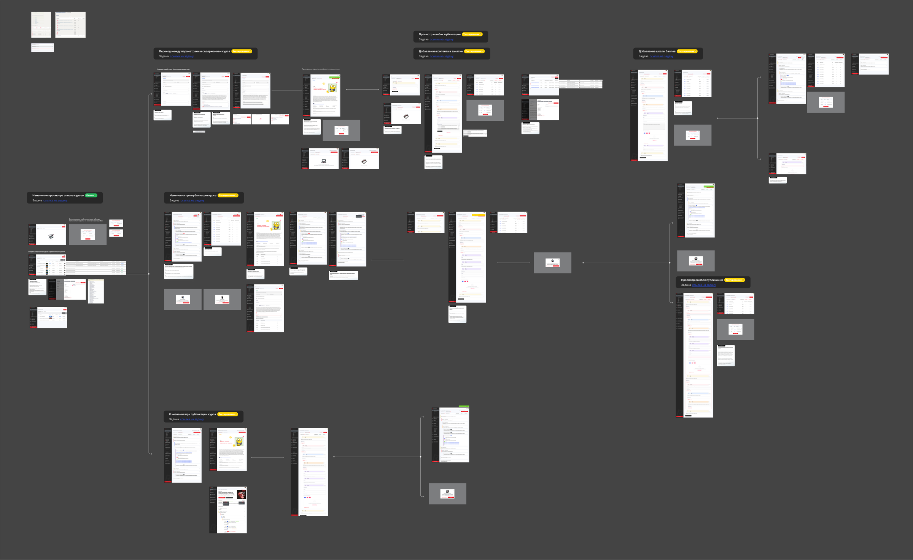
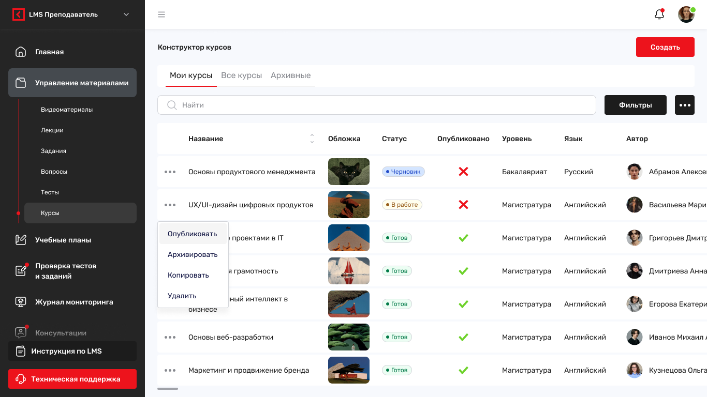
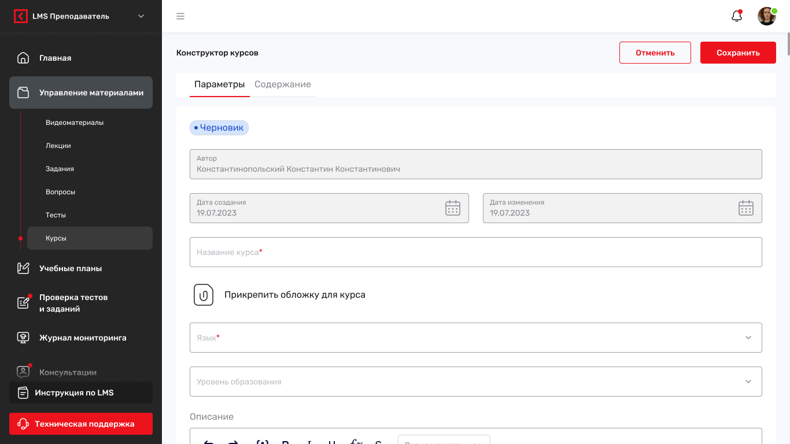
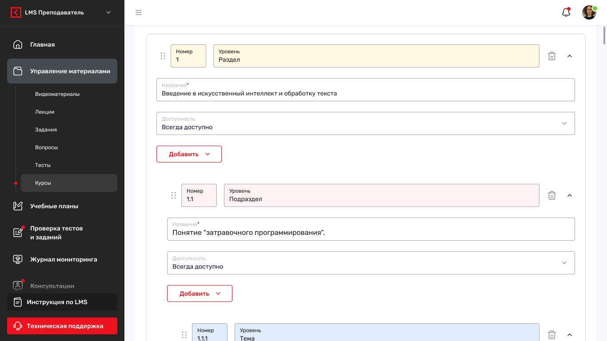
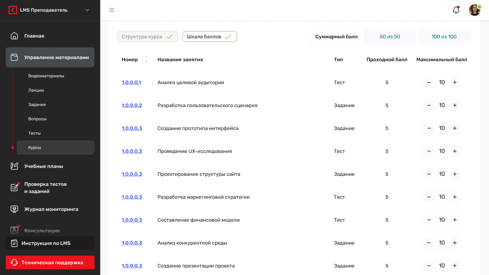
После релиза MVP провела юзабилити-тестирование с методистами бизнес-школы и ДПО. Пригласила участников первой встречи: они собирали курсы в новом сервисе на собственных материалах.
Во время работы наблюдала, где интерфейс расходится с привычным процессом и какие операции приходится выполнять лишний раз.
Основные инсайты:
У подразделений разная терминология. Одни и те же уровни структуры разные команды называли по-разному: например, «главой» или «разделом». Универсальные названия не всегда соответствовали привычному языку методистов.
Ошибки публикации обнаруживались слишком поздно. Методисты узнавали о проблемах только после нажатия кнопки «Опубликовать». Не хватало понимания готовности курса прямо во время заполнения.
Кнопки добавления было неудобно искать. Они перемещались вместе с контентом, поэтому при работе с большой структурой приходилось постоянно прокручивать страницу. Кроме того, большое количество кнопок перегружало интерфейс.
Методисты сначала создают структуру целиком, а потом наполняют её. Один из участников описал привычный процесс так: «Сначала накидываю все разделы подряд, потом возвращаюсь и наполняю». Текущий сценарий добавления по одному элементу не полностью совпадал с этим подходом.
Обратная связь подтвердила, что методистам удобно добавлять сразу несколько элементов и работать с понятными им названиями разделов.
Также выяснилось, что важно разделять ошибки: одни мешают сохранить курс, другие не дают его опубликовать. Поэтому я доработала проверку ошибок, чтобы методист сразу понимал, что именно нужно исправить и что мешает ему перейти к следующему шагу.
Ещё проработала перенос элементов между разделами. В процессе стало понятно, что здесь два разных сценария: переместить элемент рядом с другим внутри раздела или перенести его в совершенно другой раздел. Для каждого нужно было продумать свою логику.
Из-за сроков и сложности реализации решили отложить эту функцию и не включать её в текущую итерацию.
В этой итерации доработала основные сценарии и визуальный стиль сервиса. Работа совпала с обновлением сайта Синергии и брендбука, поэтому вместе с функциональными изменениями обновила интерфейс конструктора.
Что изменилось:
Добавление нескольких элементов за раз. Методисты могут сначала создать основу структуры, а затем последовательно наполнить её контентом.
Настройка структуры под школу. Добавила переименование уровней и сохранение шаблонов, чтобы методисты могли использовать привычную терминологию и повторно применять готовые структуры.
Проверка готовности к публикации. Ошибки стали отображаться уже во время заполнения, критичные проблемы, блокирующие публикацию, выделяются отдельно.
Доработка элементов управления. Пересмотрела расположение кнопок добавления, закрепила нужные действия и убрала лишние, чтобы сократить поиск по интерфейсу.
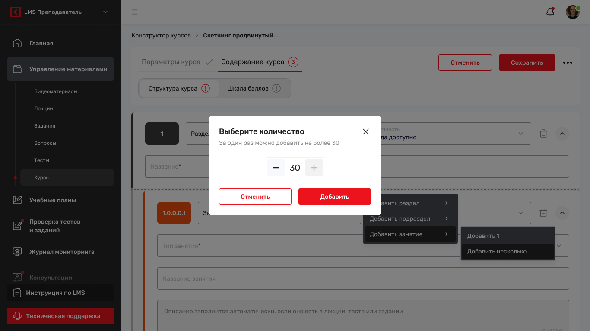
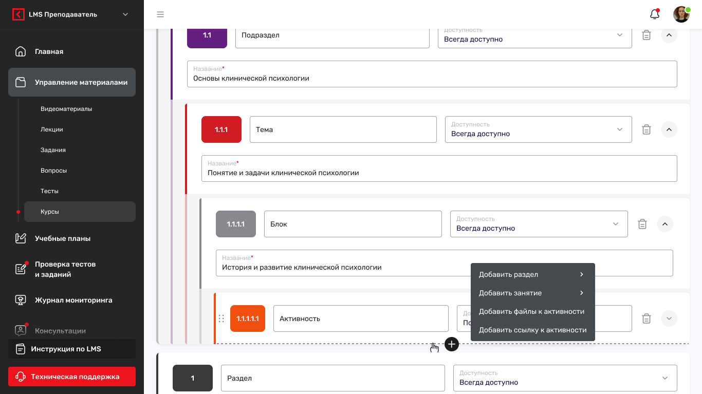
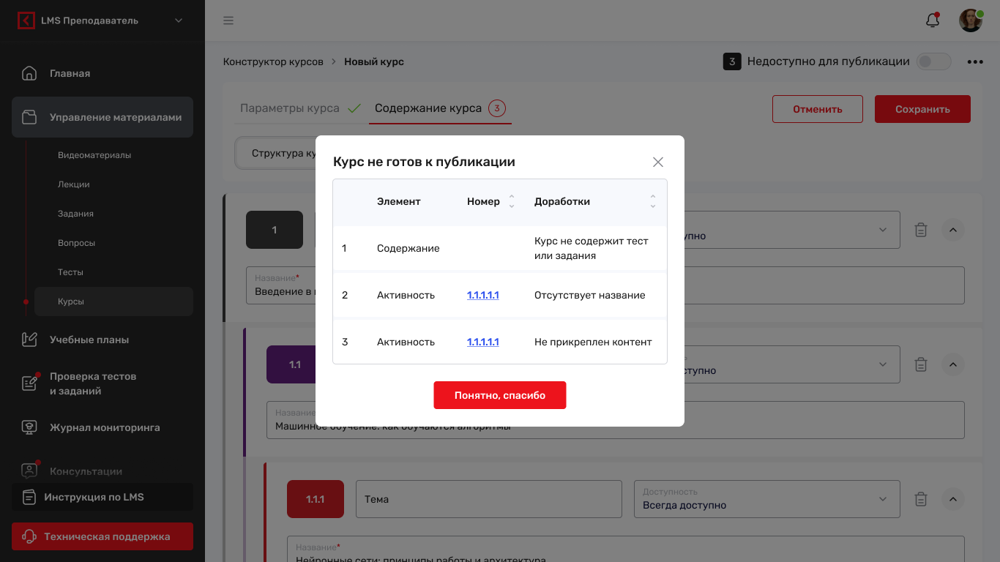
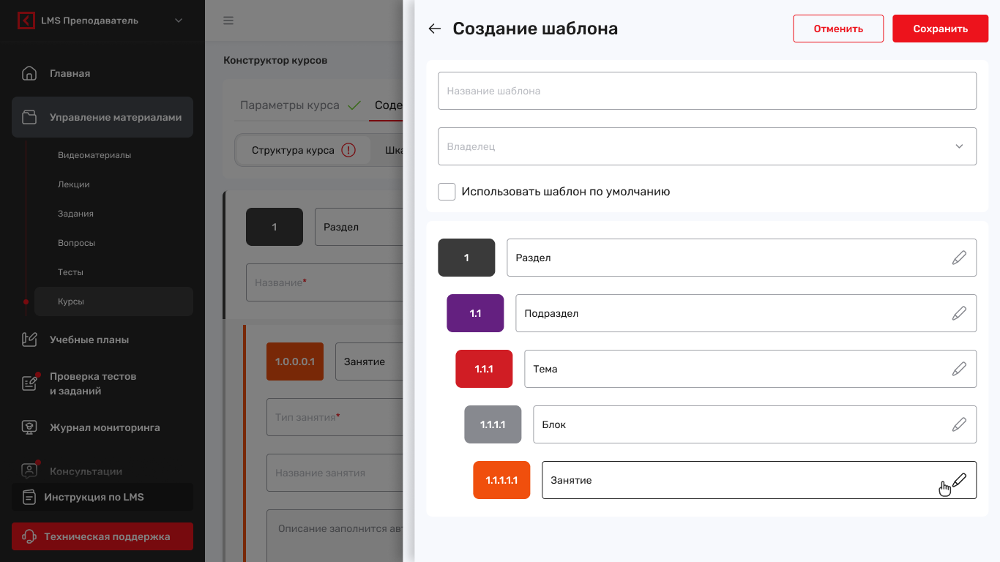
Постепенно конструктор начал использоваться для задач высшего образования. Чтобы разобраться с потребностями этой аудитории, созвонилась с методистом, которая переносила в сервис большие курсы для ВО.
Встреча длилась 40–60 минут. Методист демонстрировала процесс переноса курса ВО, а я наблюдала, как она работает с крупной структурой и какими операциями пользуется.
Основные инсайты:
Для больших курсов не хватало массовых настроек и обзора структуры. Например, доступность приходилось настраивать для каждого элемента отдельно. При переносе большого курса это превращалось в повторяющуюся ручную работу.
Методистам не хватало возможности посмотреть на курс глазами студента. При создании было сложно оценить, как будет выглядеть готовый курс, как студент станет перемещаться между разделами и находить учебные материалы.
Гипотезы о массовой настройке доступности и сворачивании структуры подтвердились. Методисты могут настроить доступность сразу для всех разделов, а не менять её у каждого элемента отдельно. В больших курсах можно свернуть всю структуру, чтобы быстро увидеть её целиком, и раскрыть только нужные разделы.
Предпросмотр курса тоже хорошо себя показал. Методисты активно им пользуются, чтобы посмотреть на курс глазами студента, проверить структуру, переходы между разделами и доступность учебных материалов до публикации.
В третьей итерации расширила возможности конструктора под образовательные сценарии высшего образования:
Добавила оформление итоговых мероприятий для ВО.
Добавила возможность создания новых типов курсов: практика, курсовая работа, выпускной экзамен, необходимые для прохождения обучения в вузе.
Добавила сворачивание и разворачивание всей структуры курса. Теперь можно быстро посмотреть на курс целиком или раскрыть только нужный раздел.
Реализовала массовую настройку доступности для всех элементов сразу.
Добавила режим предпросмотра курса глазами студента.
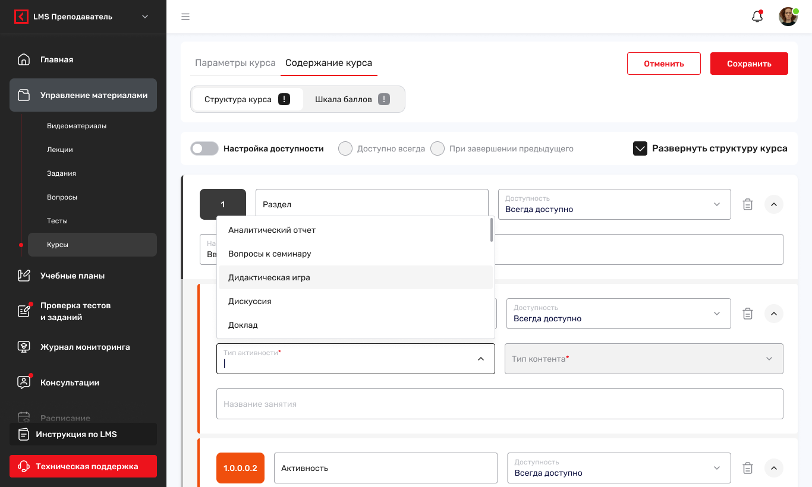
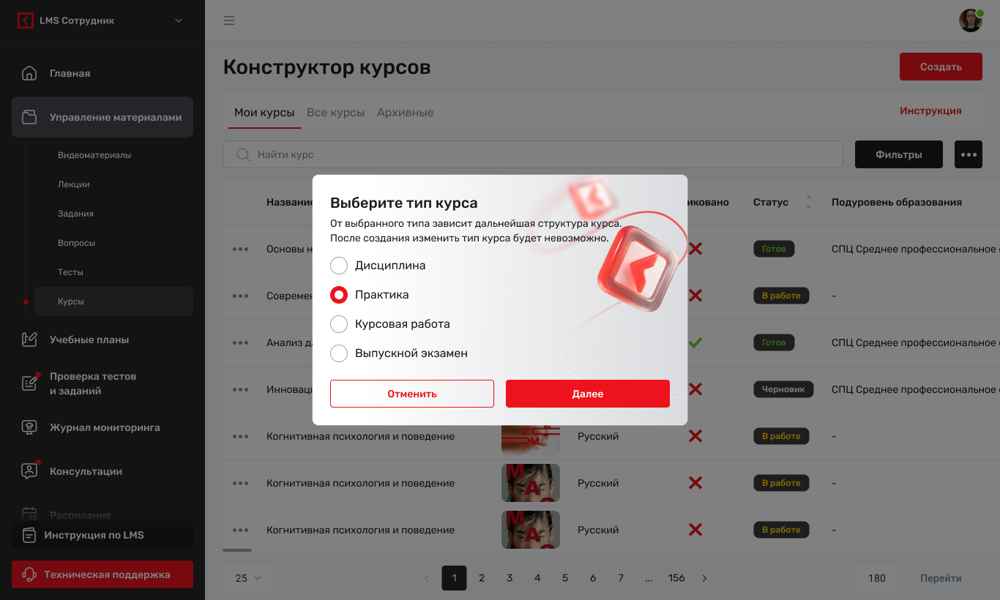
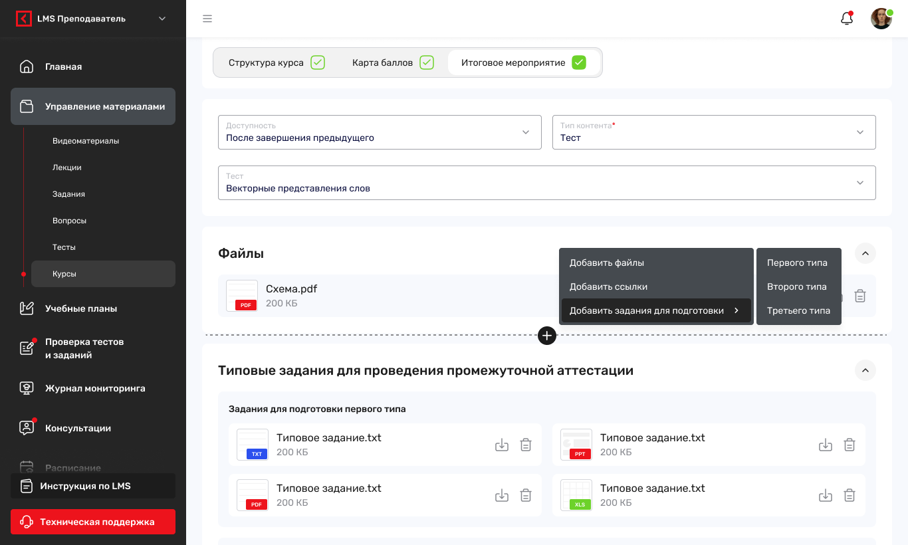
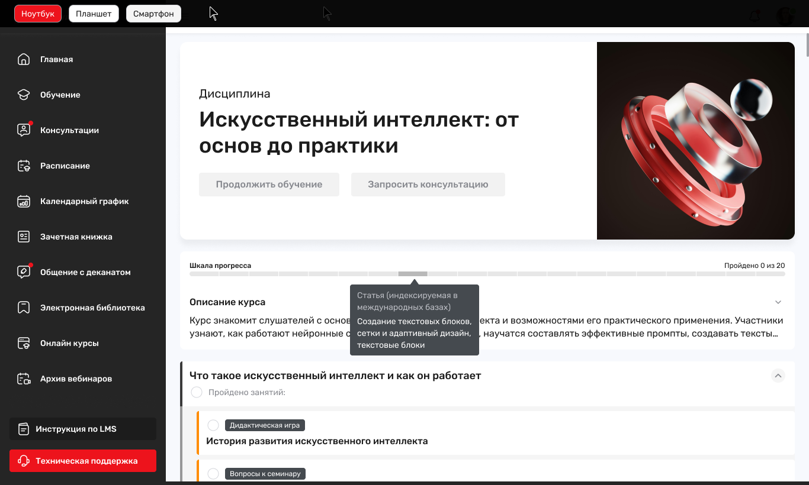
За три итерации конструктор прошёл путь от базового инструмента для создания и публикации курсов до полноценного сервиса, который поддерживает разные образовательные сценарии и работу с крупными структурами.
Сегодня методисты могут собирать курсы в одном месте, адаптировать структуру под процессы своей школы, повторно использовать шаблоны, видеть ошибки до публикации и проверять будущий курс глазами студента.
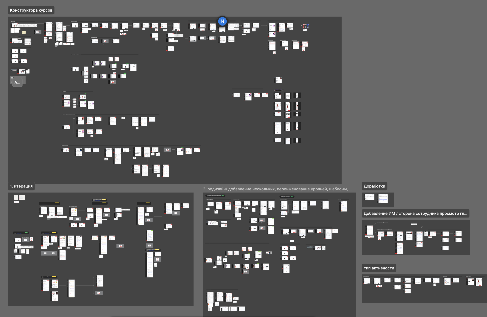